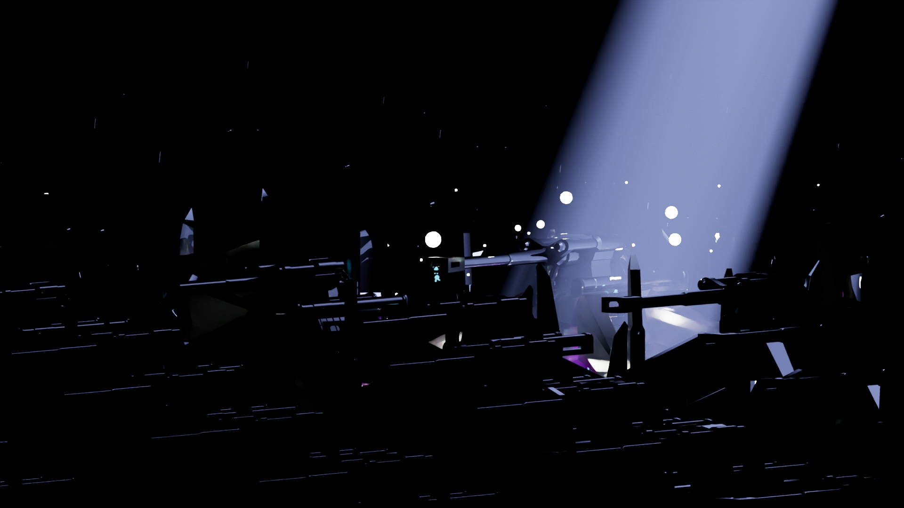
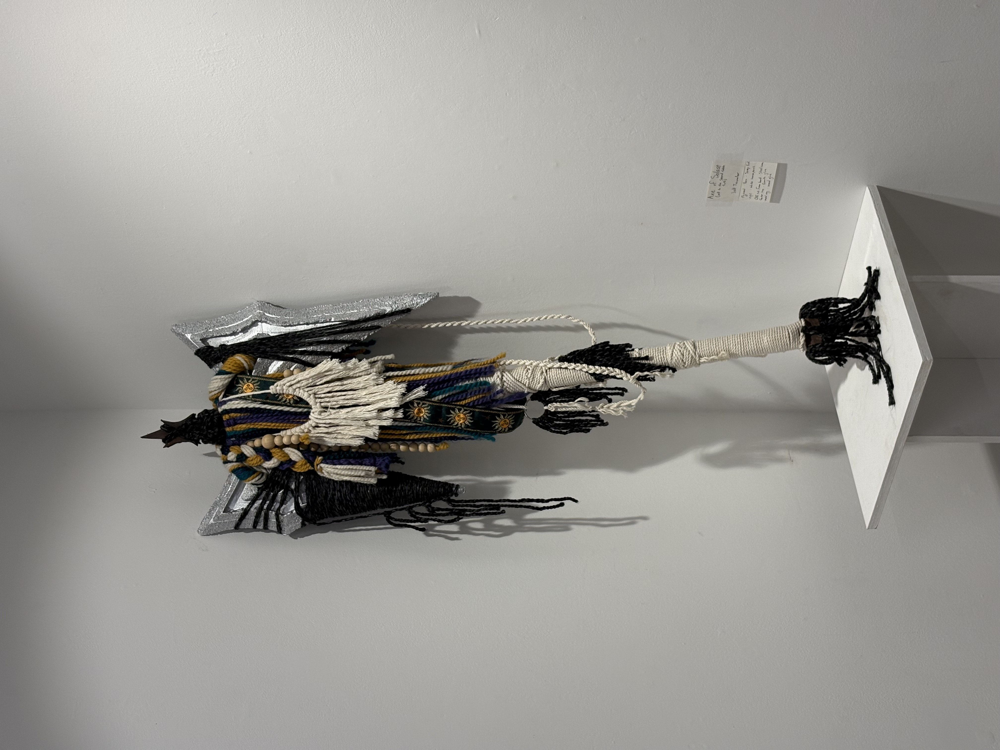
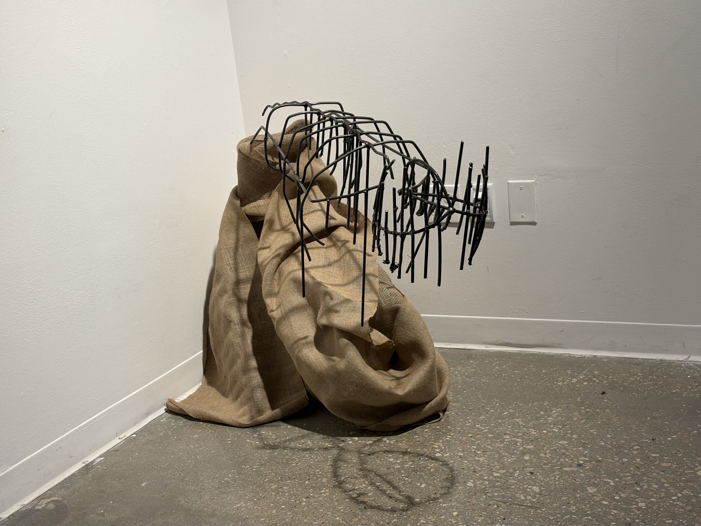
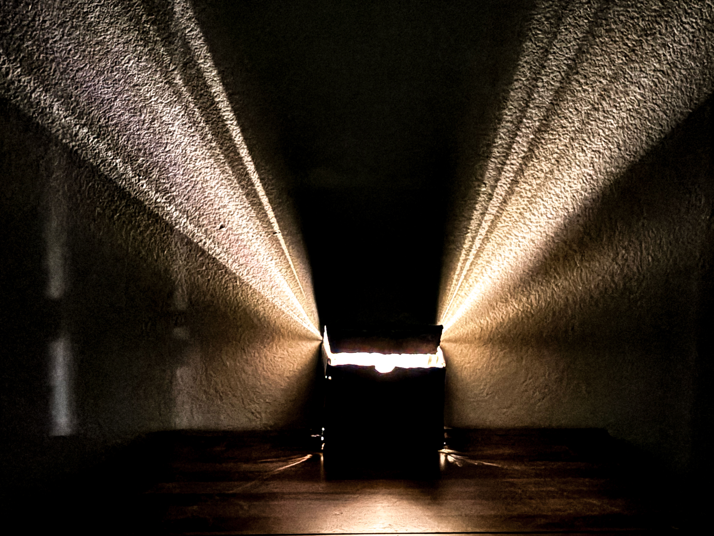
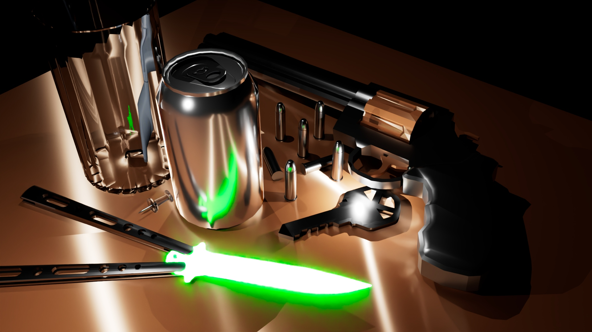

Image Gallery








New Media Artist
I’m Jett Tarwater, new media artist and university student currently enrolled at University of North Texas. My artistic medium covers many grounds including two and three dimentional art both digital and physical, music, film, and literature. These mediums enable my technical growth in practices like graphic design, asset design for video games, music/audio production, and musical performance. All while providing a platform for building worlds and stories that explore the abstract feelings kept hidden through their inherent liminality. I am a 6th generation Texan, born and raised in El Paso. Living on the Texas-Mexico border, I grew up around mostly first generation mexican-americans. Through living so aware of my own differences to everyone else around me, I have attatched a lot of importance to openmindedness, tolerance, and unconditional equality. All things that feel less and less common as I’ve grown.
A cup can look a million different ways It could be tall and made of clean burnt orange tinted glass with rounded, geometric concavities lined and stacked like bricks up and along its outer walls. Or polished ceramic and stout with a wide, half heart shaped handle and a bad highschool yearbook photo stamped on the shiny white background with unsatisfyingly sharp edges and corners. Or small, dusty, cracked, and made of dark, unpolished wood with whittle marks. They themselves are undeniable truths when are faced by them. But with each of these kinds of objects that we face, we are oushed into an innate mission to imagine the world the objects come from. And because we allow ourselves to come up with the context on our own, everyone sees a different cup. And in every cup we see, we have an opportunity to examine ourselves. Each of my works is a piece of a greater world. I will guide your imagination, but in the end, the story will be yours.





Email:
jett.tarwater@gmail.com